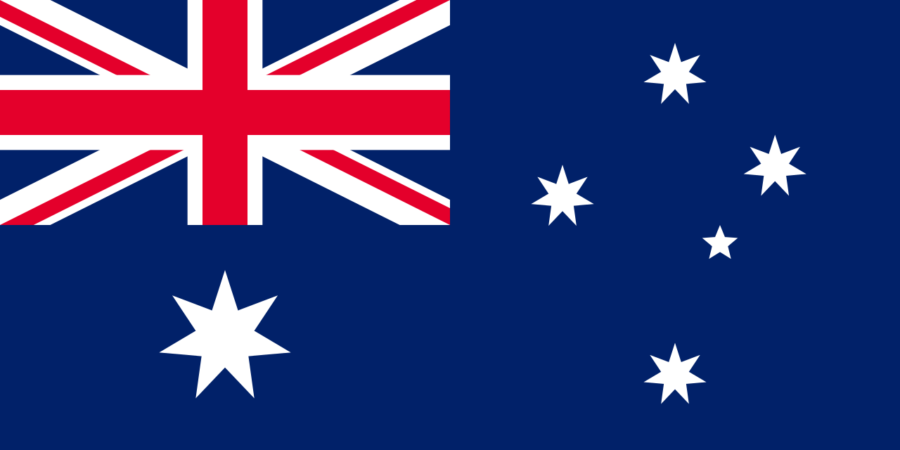

The above image highlights two major attractions in Sydney: the Harbour Bridge and the famous opera house.
Sydney is a very large city with many things to see and do. Please see the list below.
Things to do in Sydney
- Sydney Harbor Bridge
- Opera House
- Bondi Beach
- Darling Harbor
For more, please consider visiting the official Sydney website.
History of Sydney
The first people landed in Sydney in 1788. It was originally used as a prison area for the Europeans, and was not a place normal people lived like it is today. Sydney is part of the New South Wales Australian territory. Due to its British roots, the Australian flag includes the British flag in the upper left corner.